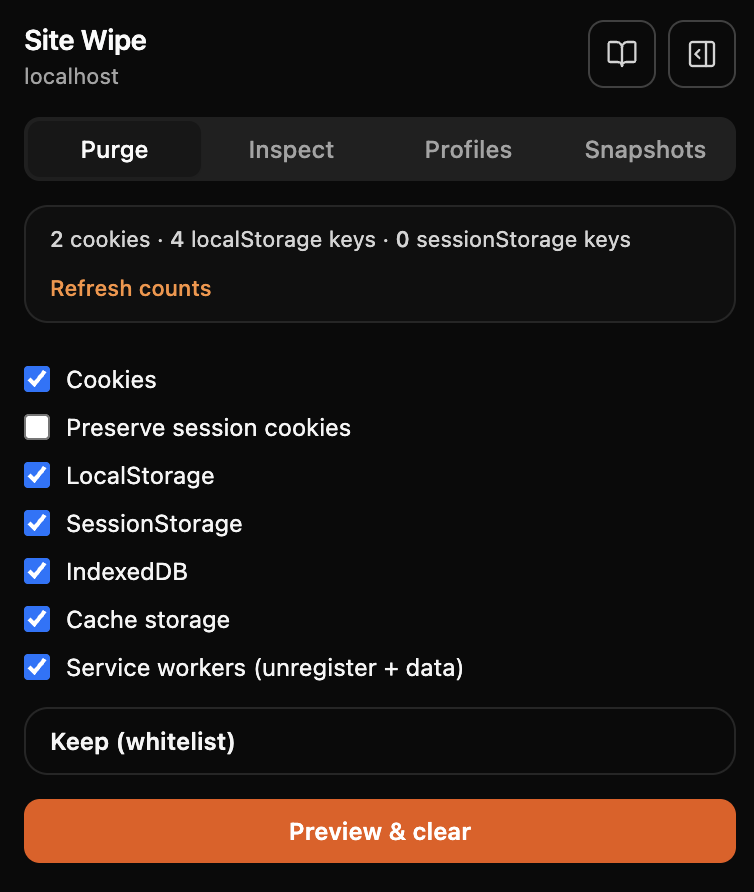
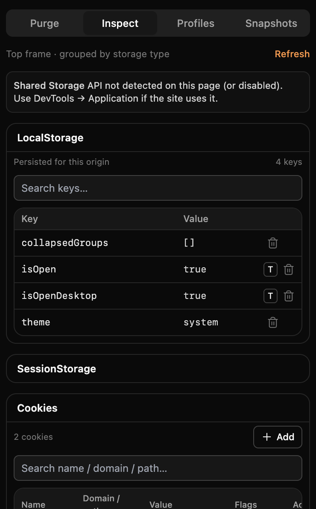
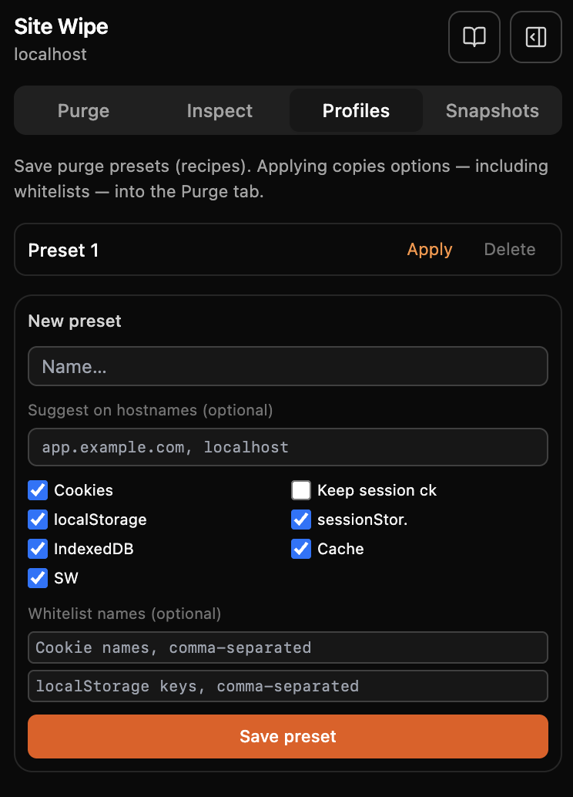
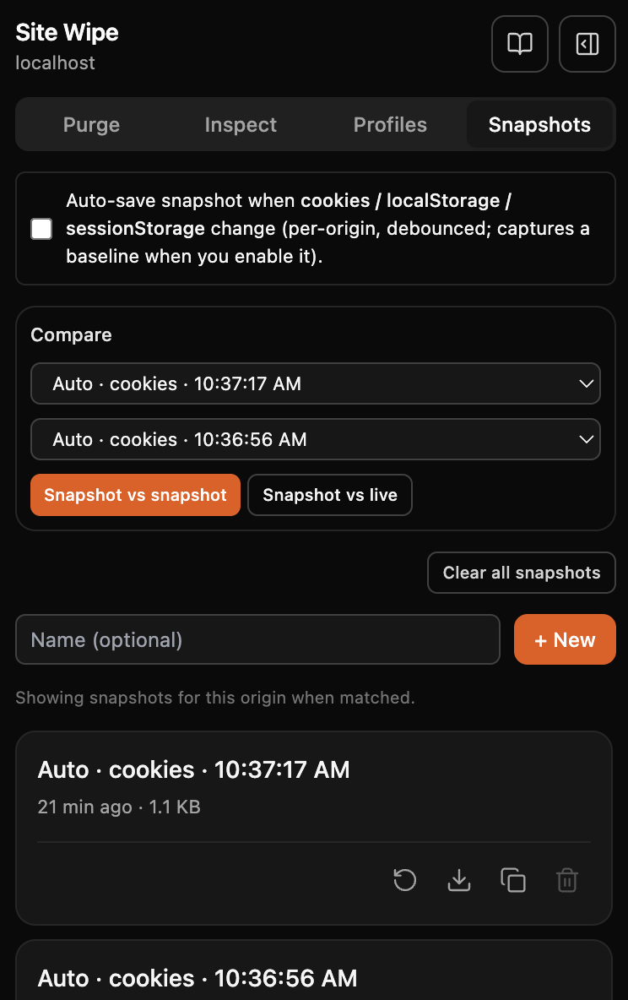
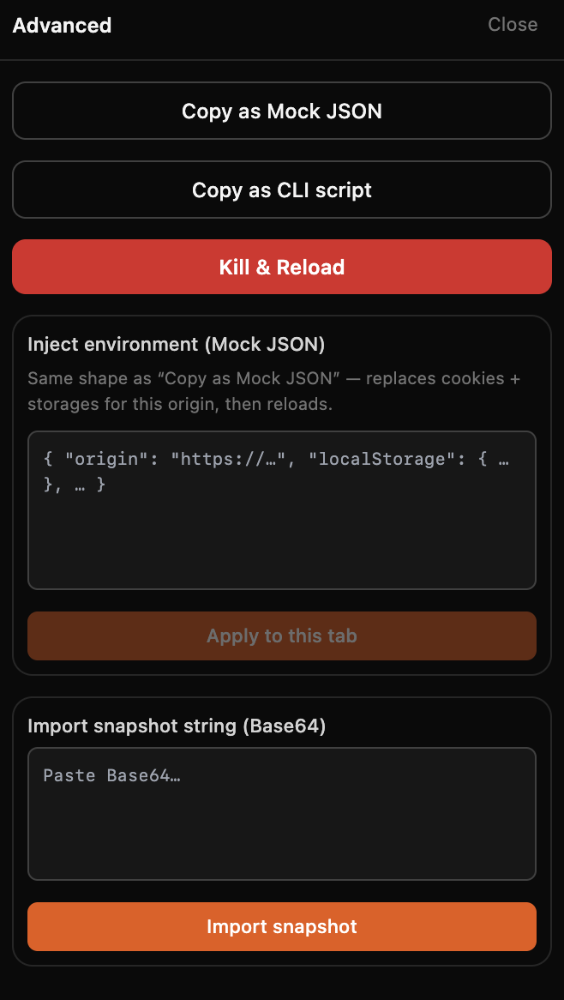

Pure state, one swipe.
Clear, inspect, snapshot, and share per-origin browser state—without wiping your whole profile or forcing a logout. Built for developers and QA on Chrome, Firefox, and Safari (macOS).
- SiteSwipe: The dev’s time machine for site data.
- SiteSwipe: Clean. Edit. Restore.
Why Sitewipe
Instead of digging through DevTools or nuking all browsing data, Sitewipe gives you a focused popup to manage cookies, storage, IndexedDB, cache, and service workers for the current site only—with whitelists, dry-run previews, and snapshots you can share.
Smart selective clear
- Purge cookies, localStorage, sessionStorage, IndexedDB, cache, and service workers per origin.
- Whitelist cookie names and storage keys to keep sessions while sweeping junk.
- Impact preview shows what would be deleted before you confirm.
Snapshots
- Save and restore cookies + storages for one origin.
- Optional auto-snapshots when storage or cookies change.
- Compare two snapshots or snapshot vs live tab.
Inspect & edit
- Inline CRUD for localStorage, sessionStorage, and cookies.
- Service workers, Cache Storage, and IndexedDB overview.
Environment injection
- Export Mock JSON or Base64 snapshot strings for teammates.
- Inject a captured environment into another tab or machine.
Purge recipes
- Save toggle + whitelist presets and apply them when hostnames match.
Privacy & security by design
100% local: snapshots and profiles stay in chrome.storage.local. No analytics, no remote
servers. Actions are scoped to the active origin.
Privacy policy →
Screenshots





Who it’s for
Developers
Debug auth and cache issues, tame service workers, and reset one origin cleanly.
QA & testers
Snapshot complex flows and restore them in seconds between runs.